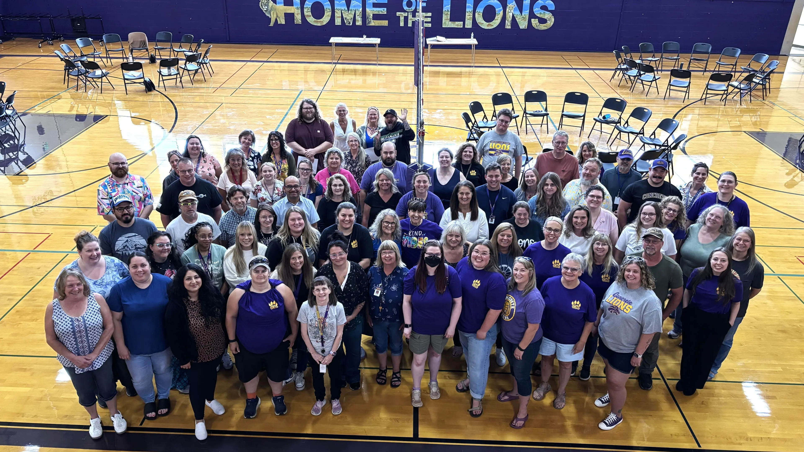

Policy & Priorities
Key commitments for enhancing educational pathways, supporting our educators, and ensuring fiscal accountability.
CTE & STEM Education
Preparing Concrete students for modern workforce demands through practical, forward-thinking technical education.
Commitment 1: Career Pathways
Invest in programs that directly lead to high-paying, regional careers, trade certifications, and technical pathways.
Commitment 2: Modernization
Update hands-on technical equipment, software, and curricula to develop real-world problem-solving skills across grade levels.

Supportive Conditions for Teachers
Creating an environment where top educators want to come, stay, and thrive professionally.
Commitment 1: Rewarding Staff
Explore unique, district-level benefit options and creative incentives to attract, support, and retain high-quality teachers.
Commitment 2: Administrative Backing
Ensure professional autonomy, strong administrative support for classroom discipline, and meaningful teacher involvement in policy decisions.
Fiscal Integrity & District Accountability
Exercising responsible governance and transparent financial stewardship of public education funds.
Commitment 1: Budget Transparency
Guarantee clear, accessible financial reporting so community members can easily see how local tax dollars are spent.
Commitment 2: Classroom-First Spending
Prioritize direct classroom impact and facility maintenance in long-range financial planning to ensure students and teachers come first.